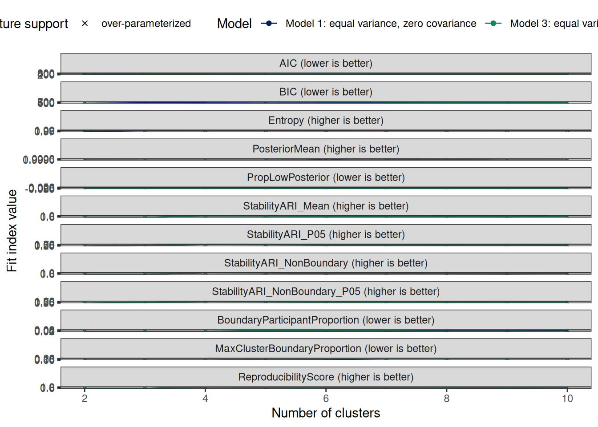

Model Classes LogLik parameters n AIC AWE BIC CAIC
1 1 2 -351.06784 37 25 776.1357 1049.4065 821.2341 858.2341
2 3 2 72.51292 169 25 192.9742 1447.9542 398.9642 567.9642
3 1 3 -277.85952 50 25 655.7190 1025.6102 716.6628 766.6628
4 3 3 93.07687 182 25 177.8463 1529.5171 399.6817 581.6817
5 1 4 -152.90811 63 25 431.8162 898.3946 508.6054 571.6054
6 3 4 121.18864 195 25 147.6227 1595.9843 385.3035 580.3035
7 1 5 -121.23197 76 25 394.4639 957.7331 487.0985 563.0985
8 3 5 132.17612 208 25 151.6478 1696.7001 405.1739 613.1739
9 1 6 -112.97339 89 25 403.9468 1063.9107 512.4267 601.4267
10 3 6 132.01242 221 25 177.9752 1819.7243 447.3467 668.3467
11 1 7 -118.45913 102 25 440.9183 1197.5701 565.2436 667.2436
12 3 7 150.29455 234 25 167.4109 1905.8448 452.6278 686.6278
13 1 8 -110.08009 115 25 450.1602 1303.5040 590.3309 705.3309
14 3 8 157.93308 247 25 178.1338 2013.2585 479.1962 726.1962
15 1 9 -100.13395 128 25 456.2679 1406.3006 612.2840 740.2840
16 3 9 184.01651 260 25 151.9670 2083.7824 468.8747 728.8747
17 1 10 -85.65194 141 25 453.3039 1500.0273 625.1654 766.1654
18 3 10 193.34826 273 25 159.3035 2187.8097 492.0566 765.0566
CLC KIC SABIC ICL Entropy prob_min prob_max
1 704.0617 816.1357 706.4937 -821.8855 0.9629876 0.9553981 0.9999889
2 -143.0258 364.9742 -125.1205 -398.9642 1.0000000 1.0000000 1.0000000
3 557.7155 708.7190 561.6082 -716.6779 0.9982285 0.9990952 0.9999986
4 -184.1537 362.8463 -164.7172 -399.6817 0.9999973 0.9999996 1.0000000
5 307.8162 497.8162 313.2365 -508.6054 1.0000000 1.0000000 1.0000000
6 -240.3773 345.6227 -219.4096 -385.3035 0.9999977 0.9999992 1.0000000
7 244.4639 473.4639 251.4155 -487.0985 1.0000000 1.0000000 1.0000000
8 -262.3523 362.6478 -239.8534 -405.1740 0.9999933 0.9999963 1.0000000
9 227.9428 495.9468 236.4295 -512.4582 0.9979917 0.9960938 1.0000000
10 -262.0309 401.9752 -237.9948 -447.3914 0.9969976 0.9971487 1.0000000
11 238.9171 545.9183 248.9321 -565.2508 0.9994202 0.9982046 1.0000000
12 -298.5891 404.4109 -273.0279 -452.6278 0.9999994 0.9999994 1.0000000
13 222.1578 568.1602 233.7052 -590.3498 0.9987990 0.9983064 1.0000000
14 -313.8662 428.1338 -286.7738 -479.1962 0.9999962 0.9999942 1.0000000
15 202.2674 587.2679 215.3441 -612.2874 0.9997389 0.9994257 1.0000000
16 -366.0330 414.9670 -337.4094 -468.8747 0.9999966 0.9999924 1.0000000
17 173.3035 597.3039 187.9113 -625.1683 0.9998065 0.9986208 1.0000000
18 -384.6965 435.3035 -354.5417 -492.0566 0.9999992 0.9999966 1.0000000
BLRTStatistic BLRTPValue MinProfileNodeN MaxProfileNodeN
1 NA NA 6 19
2 NA NA 6 19
3 NA NA 6 13
4 NA NA 6 13
5 NA NA 5 8
6 NA NA 5 8
7 NA NA 2 6
8 NA NA 4 6
9 NA NA 2 6
10 NA NA 2 6
11 NA NA 1 6
12 NA NA 1 6
13 NA NA 1 6
14 NA NA 1 5
15 NA NA 1 6
16 NA NA 1 5
17 NA NA 1 5
18 NA NA 1 5
MinProfileNodeProportion MaxProfileNodeProportion MinProfileParticipantN
1 0.24 0.76 80
2 0.24 0.76 80
3 0.24 0.52 80
4 0.24 0.52 80
5 0.20 0.32 80
6 0.20 0.32 80
7 0.08 0.24 0
8 0.16 0.24 30
9 0.08 0.24 0
10 0.08 0.24 27
11 0.04 0.24 8
12 0.04 0.24 21
13 0.04 0.24 8
14 0.04 0.20 21
15 0.04 0.24 3
16 0.04 0.20 3
17 0.04 0.20 3
18 0.04 0.20 3
MinProfileParticipantProportion PosteriorMean PosteriorMedian
1 0.250000 0.9999309 0.9999990
2 0.250000 1.0000000 1.0000000
3 0.250000 1.0000000 1.0000000
4 0.250000 1.0000000 1.0000000
5 0.250000 1.0000000 1.0000000
6 0.250000 1.0000000 1.0000000
7 0.000000 1.0000000 1.0000000
8 0.093750 0.9999992 1.0000000
9 0.000000 0.9990130 1.0000000
10 0.084375 0.9986431 1.0000000
11 0.025000 0.9998089 0.9999998
12 0.065625 0.9999998 1.0000000
13 0.025000 0.9996616 0.9999992
14 0.065625 0.9999992 1.0000000
15 0.009375 0.9999342 0.9999998
16 0.009375 0.9999992 1.0000000
17 0.009375 0.9999504 1.0000000
18 0.009375 0.9999999 1.0000000
PropLowPosterior StabilitySuccessRate StabilityARI_Mean StabilityARI_P05
1 0 1 0.4656616 -0.01524288
2 0 1 0.4656616 -0.01524288
3 0 1 0.4624432 0.46116314
4 0 1 0.4624432 0.46116314
5 0 1 0.9958202 0.99205833
6 0 1 0.9958202 0.99205833
7 0 1 0.9897228 0.98047339
8 0 1 0.8956853 0.86045376
9 0 1 0.9151670 0.90782561
10 0 1 0.7626110 0.67909257
11 0 1 0.8016879 0.77806202
12 0 1 0.7225818 0.69660212
13 0 1 0.6866398 0.66857645
14 0 1 0.7317106 0.69663241
15 0 1 0.6493978 0.62649461
16 0 1 0.6964294 0.65997935
17 0 1 0.7380422 0.70948639
18 0 1 0.7594990 0.75070975
StabilityJaccard_Mean StabilityJaccard_Min StabilityCoreProportion
1 0.7083333 0.66666667 1
2 0.7083333 0.66666667 1
3 0.6651074 0.49687500 1
4 0.6651074 0.49687500 1
5 0.9968943 0.99375000 1
6 0.9968943 0.99375000 1
7 0.9921875 0.97500000 1
8 0.7725000 0.25000000 1
9 0.7946044 0.31875000 1
10 0.6132120 0.23750000 1
11 0.6032487 0.23259494 1
12 0.5920687 0.28149693 1
13 0.4869087 0.11164954 1
14 0.6426372 0.28149693 1
15 0.4195441 0.03750000 1
16 0.5609762 0.04592363 1
17 0.5611938 0.03835784 1
18 0.6494702 0.04592363 1
StabilityARI_Core StabilityJaccard_CoreMean StabilityJaccard_CoreMin
1 0.4656616 0.7083333 0.66666667
2 0.4656616 0.7083333 0.66666667
3 0.4624432 0.6651074 0.49687500
4 0.4624432 0.6651074 0.49687500
5 0.9958202 0.9968943 0.99375000
6 0.9958202 0.9968943 0.99375000
7 0.9897228 0.9921875 0.97500000
8 0.8956853 0.7725000 0.25000000
9 0.9151670 0.7946044 0.31875000
10 0.7626110 0.6132120 0.23750000
11 0.8016879 0.6032487 0.23259494
12 0.7225818 0.5920687 0.28149693
13 0.6866398 0.4869087 0.11164954
14 0.7317106 0.6426372 0.28149693
15 0.6493978 0.4195441 0.03750000
16 0.6964294 0.5609762 0.04592363
17 0.7380422 0.5611938 0.03835784
18 0.7594990 0.6494702 0.04592363
StabilityNonBoundaryProportion StabilityARI_NonBoundary
1 1.000000 0.4656616
2 1.000000 0.4656616
3 1.000000 0.4624432
4 1.000000 0.4624432
5 1.000000 0.9958202
6 1.000000 0.9958202
7 1.000000 0.9897228
8 0.962500 0.9103017
9 0.993750 0.9170130
10 0.956250 0.7682828
11 0.978125 0.8135826
12 0.937500 0.7363608
13 0.968750 0.6955504
14 0.928125 0.7469045
15 0.968750 0.6564588
16 0.928125 0.7070187
17 0.962500 0.7468363
18 0.921875 0.7678478
StabilityARI_NonBoundary_P05 StabilityJaccard_NonBoundaryMean
1 -0.01524288 0.7083333
2 -0.01524288 0.7083333
3 0.46116314 0.6651074
4 0.46116314 0.6651074
5 0.99205833 0.9968943
6 0.99205833 0.9968943
7 0.98047339 0.9921875
8 0.87298331 0.7725000
9 0.90954936 0.7945837
10 0.67788872 0.6131948
11 0.78985527 0.6041955
12 0.70457768 0.5922588
13 0.67774734 0.4876779
14 0.71257501 0.6452262
15 0.63276808 0.4201939
16 0.66837196 0.5607031
17 0.71759872 0.5634501
18 0.75732105 0.6521223
StabilityJaccard_NonBoundaryMin ReproducibilityScore_All
1 0.66666667 0.4656616
2 0.66666667 0.4656616
3 0.49687500 0.4624432
4 0.49687500 0.4624432
5 0.99375000 0.9958202
6 0.99375000 0.9958202
7 0.97500000 0.9897228
8 0.23529412 0.8956853
9 0.32692308 0.9151670
10 0.22058824 0.7626110
11 0.20000000 0.8016879
12 0.27525253 0.7225818
13 0.11164954 0.6866398
14 0.27525253 0.7317106
15 0.03896104 0.6493978
16 0.04861111 0.6964294
17 0.04031385 0.7380422
18 0.04861111 0.7594990
ReproducibilityScore BoundaryParticipantProportion
1 0.4656616 0.000000
2 0.4656616 0.000000
3 0.4624432 0.000000
4 0.4624432 0.000000
5 0.9958202 0.000000
6 0.9958202 0.000000
7 0.9897228 0.000000
8 0.8956853 0.037500
9 0.9151670 0.006250
10 0.7626110 0.043750
11 0.8016879 0.021875
12 0.7225818 0.062500
13 0.6866398 0.031250
14 0.7317106 0.071875
15 0.6493978 0.031250
16 0.6964294 0.071875
17 0.7380422 0.037500
18 0.7594990 0.078125
MaxClusterBoundaryProportion MixtureParameters MixtureNodes
1 0.00000000 37 25
2 0.00000000 103 25
3 0.00000000 50 25
4 0.00000000 116 25
5 0.00000000 63 25
6 0.00000000 129 25
7 0.00000000 76 25
8 0.20000000 142 25
9 0.03703704 89 25
10 0.21052632 155 25
11 0.20000000 102 25
12 0.21052632 168 25
13 0.20000000 115 25
14 0.21052632 181 25
15 0.20000000 128 25
16 0.21052632 194 25
17 0.20000000 141 25
18 0.21052632 207 25
ParticipantsPerNode OccupancyCompliant NodesPerParameter Overparameterized
1 12.8 TRUE 0.6756757 TRUE
2 12.8 TRUE 0.2427184 TRUE
3 12.8 TRUE 0.5000000 TRUE
4 12.8 TRUE 0.2155172 TRUE
5 12.8 TRUE 0.3968254 TRUE
6 12.8 TRUE 0.1937984 TRUE
7 12.8 TRUE 0.3289474 TRUE
8 12.8 TRUE 0.1760563 TRUE
9 12.8 TRUE 0.2808989 TRUE
10 12.8 TRUE 0.1612903 TRUE
11 12.8 TRUE 0.2450980 TRUE
12 12.8 TRUE 0.1488095 TRUE
13 12.8 TRUE 0.2173913 TRUE
14 12.8 TRUE 0.1381215 TRUE
15 12.8 TRUE 0.1953125 TRUE
16 12.8 TRUE 0.1288660 TRUE
17 12.8 TRUE 0.1773050 TRUE
18 12.8 TRUE 0.1207729 TRUE
SupportStatus AIC_scaled BIC_scaled Entropy_scaled
1 over-parameterized -2.3217180 -2.57142713 -3.98596017
2 over-parameterized 0.7235624 1.03870975 0.29597332
3 over-parameterized -1.6928999 -1.67740986 0.09103470
4 over-parameterized 0.8025605 1.03257570 0.29566559
5 over-parameterized -0.5236752 0.10134775 0.29597317
6 over-parameterized 0.9603884 1.15549972 0.29570174
7 over-parameterized -0.3286210 0.28521775 0.29597333
8 over-parameterized 0.9393696 0.98562035 0.29519501
9 over-parameterized -0.3781406 0.06867773 0.06363850
10 over-parameterized 0.8018875 0.62507018 -0.05137539
11 over-parameterized -0.5712063 -0.38287255 0.22890167
12 over-parameterized 0.8570542 0.57991985 0.29590390
13 over-parameterized -0.6194677 -0.59735287 0.15702885
14 over-parameterized 0.8010588 0.35277774 0.29553557
15 over-parameterized -0.6513624 -0.78503789 0.26576360
16 over-parameterized 0.9377027 0.44101974 0.29557465
17 over-parameterized -0.6358843 -0.89516541 0.27359220
18 over-parameterized 0.8993913 0.24282944 0.29587976
Reproducibility_scaled Posterior_scaled ahp_index Eligible Recommended
1 -1.460958081 0.26536601 -2.5850158 FALSE FALSE
2 -1.460958081 0.44719763 0.1493218 FALSE FALSE
3 -1.478535111 0.44719716 -1.1894526 FALSE FALSE
4 -1.478535111 0.44719763 0.1630667 FALSE FALSE
5 1.434447183 0.44719763 0.3270232 FALSE FALSE
6 1.434447183 0.44719763 0.9615093 FALSE FALSE
7 1.401147205 0.44719762 0.4134293 FALSE FALSE
8 0.887571052 0.44515837 0.7769390 FALSE FALSE
9 0.993968265 -2.14876252 0.1870360 FALSE FALSE
10 0.160799529 -3.12154031 0.3840955 FALSE FALSE
11 0.374213962 -0.05534519 -0.0877408 FALSE FALSE
12 -0.057815682 0.44678403 0.4187656 FALSE FALSE
13 -0.254108935 -0.44289951 -0.3284752 FALSE FALSE
14 -0.007959829 0.44513967 0.3603531 FALSE FALSE
15 -0.457502390 0.27411167 -0.4070348 FALSE FALSE
16 -0.200644329 0.44504462 0.3684132 FALSE FALSE
17 0.026619558 0.31686578 -0.3077095 FALSE FALSE
18 0.143803611 0.44689206 0.3954760 FALSE FALSE
GridDesignPolicy GridDesignK TargetNodesPerProfile SOMNodeCount
1 explicit_dimensions 10 20 25
2 explicit_dimensions 10 20 25
3 explicit_dimensions 10 20 25
4 explicit_dimensions 10 20 25
5 explicit_dimensions 10 20 25
6 explicit_dimensions 10 20 25
7 explicit_dimensions 10 20 25
8 explicit_dimensions 10 20 25
9 explicit_dimensions 10 20 25
10 explicit_dimensions 10 20 25
11 explicit_dimensions 10 20 25
12 explicit_dimensions 10 20 25
13 explicit_dimensions 10 20 25
14 explicit_dimensions 10 20 25
15 explicit_dimensions 10 20 25
16 explicit_dimensions 10 20 25
17 explicit_dimensions 10 20 25
18 explicit_dimensions 10 20 25
ExpectedNodesPerProfile
1 12.500000
2 12.500000
3 8.333333
4 8.333333
5 6.250000
6 6.250000
7 5.000000
8 5.000000
9 4.166667
10 4.166667
11 3.571429
12 3.571429
13 3.125000
14 3.125000
15 2.777778
16 2.777778
17 2.500000
18 2.500000[1] "No eligible SOM mixture candidate is available for composite recommendation."# A tibble: 18 × 18
Model Classes StabilitySuccessRate StabilityARI_Mean StabilityARI_P05
<int> <int> <dbl> <dbl> <dbl>
1 1 2 1 0.466 -0.0152
2 3 2 1 0.466 -0.0152
3 1 3 1 0.462 0.461
4 3 3 1 0.462 0.461
5 1 4 1 0.996 0.992
6 3 4 1 0.996 0.992
7 1 5 1 0.990 0.980
8 3 5 1 0.896 0.860
9 1 6 1 0.915 0.908
10 3 6 1 0.763 0.679
11 1 7 1 0.802 0.778
12 3 7 1 0.723 0.697
13 1 8 1 0.687 0.669
14 3 8 1 0.732 0.697
15 1 9 1 0.649 0.626
16 3 9 1 0.696 0.660
17 1 10 1 0.738 0.709
18 3 10 1 0.759 0.751
# ℹ 13 more variables: StabilityJaccard_Mean <dbl>, StabilityJaccard_Min <dbl>,
# StabilityCoreProportion <dbl>, StabilityARI_Core <dbl>,
# StabilityJaccard_CoreMean <dbl>, StabilityJaccard_CoreMin <dbl>,
# StabilityNonBoundaryProportion <dbl>, StabilityARI_NonBoundary <dbl>,
# StabilityARI_NonBoundary_P05 <dbl>, StabilityJaccard_NonBoundaryMean <dbl>,
# StabilityJaccard_NonBoundaryMin <dbl>, ReproducibilityScore_All <dbl>,
# ReproducibilityScore <dbl>